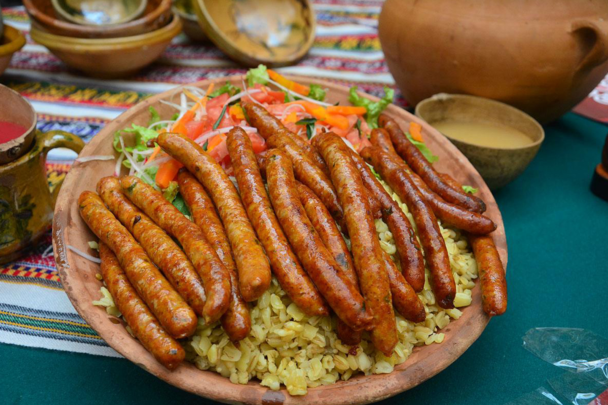

El chorizo proviene de la península ibérica y su técnica de elaboración, así como los principales animales para hacerlo como el cerdo y la vaca, llegó al Nuevo Mundo por los españoles.
Los chorizos de la plaza de La Ranchería constituyen otro símbolo de la gastronomía de Oruro, un espacio público de la época colonial donde los preparan y venden.
Son hechos de carne molida condimentada y servidos con mote y pancitos. El Calvario y el Mercado Campero son otros puntos de venta, especialmente en la temporada carnavalesca.
|  | Chorizos |